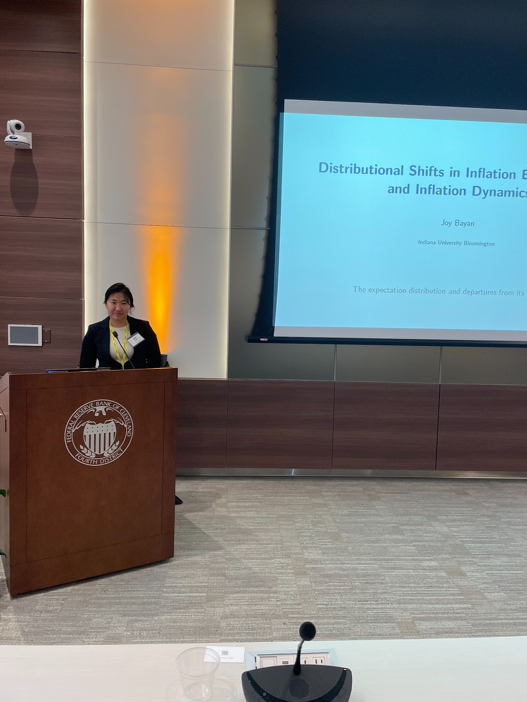

Macroeconomics · Monetary Economics · Macroeconometrics · International Macroeconomics
I study inflation and how expectations, international trade, and monetary policy shape economic outcomes. My research combines household and regional data with econometric methods and macroeconomic models, with projects on inflation expectations, grocery prices, and energy shocks.
The representative-agent New Keynesian Phillips Curve assumes common inflation expectations across agents, while empirical applications typically summarize heterogeneous expectations by their mean. This paper asks whether the mean is a sufficient statistic for the role of expectations in inflation dynamics or whether the distribution of expectations also matters. Using individual responses from the University of Michigan Survey of Consumers from 1990 to 2025, I estimate inflation-expectation densities and use functional principal component analysis to characterize changes in their shape over time. Accounting for distributional features in the fixed-reference specification produces a steeper estimated aggregate Phillips Curve slope while reducing the explanatory role of the mean expectation. During the COVID inflation surge, the right tail of the distribution thickened before the entire distribution shifted rightward, suggesting that changes in the distribution can provide early signals of inflationary pressures. The results suggest that distributional information supplements mean expectations in explaining inflation dynamics, with additional predictive information during COVID.
From Regional to Aggregate: Trade Openness and the U.S. Phillips Curve After 2000
Show abstractHide abstract
This paper studies how trade openness reshaped the slope of the U.S. Phillips Curve after 2000. I develop an open-economy New Keynesian framework in which inflation dynamics depend on domestic slack and exposure to foreign-goods prices through trade openness. Empirically, I use U.S. regional panel data and exploit cross-regional variation in exposure to globalization using a shift-share instrument constructed from pre-2000 regional employment shares. The results show that trade openness contributed to the flattening of the U.S. Phillips Curve after 2000.
Work in progress
When the Poor Pay More for Groceries: Post-COVID Online Retail Transformation
With Xudong (Sean) An (Federal Reserve Bank of Philadelphia) and Rodney Ramcharan (University of Southern California)
Show abstractHide abstract
Using 100 million grocery retail transactions from 228,519 U.S. households between 2019 and 2023, we show that low-income households experienced 1.4% more grocery price inflation than high-income households in the post-COVID period. After 2022, fresh-produce prices rose 5.3% more for low-income households. The increased adoption of online shopping eliminated geographic pricing advantages, reducing relative savings for low-income households by 4.4%, while the expansion of warehouse clubs increased their price premiums by 6.4%, with monetary policy tightening adding a further 0.11%.
Monetary Policy, Oil Shocks, and the Distribution of S&P 500 Stock Market Returns
Show abstractHide abstract
This paper studies how oil supply, global demand, oil-specific demand, and monetary policy shocks affect the distribution of U.S. stock market returns. Using monthly data from 1988 to 2018, I estimate cross-sectional densities of S&P 500 returns and use functional principal component analysis to summarize changes in their shape. I combine these distributional components with a Kilian-style structural vector autoregression in a mixed vector autoregressive framework to examine how the shocks transmit through the return distribution beyond their effects on average returns.
Presentations: Cleveland State University (2025); Indiana University (2024).
TEACHING
Helping students interpret the economy
My goal is to help students become critical consumers of economic information, using concepts such as inflation, unemployment, and monetary policy to interpret economic events.
Quizzes with multiple attempts help students practice concepts and calculations. Weekly essays and feedback help them explain economic indicators in their own words.
Connect concepts to evidence
Class discussions draw on current economic news and historical data from FRED to connect inflation, growth, unemployment, and monetary policy to students’ lives.
Develop independent arguments
Individual country projects ask students to bring together economic data and policy analysis, supporting their explanations with concepts and evidence.
Instructor of Record
Fundamentals of Economics for Business II Macroeconomics · ECON-B 252 Indiana University · Fall 2024 · 60 students
Teaching Assistant
Economics and statistics · Indiana University · 2021–2026
View courses
Statistical Analysis for Business and Economics (ECON-E 370) · Spring 2025 Economics of Race (ECON-E 211) · Spring 2024 Economics of Gender (ECON-E 211) · Spring 2023 Fundamentals of Economics for Business II (ECON-B 252) · Fall 2022
PRESENTATIONS
Selected presentations
2026 · PRESENTED
Federal Reserve Bank of Philadelphia Research Seminar (August) · Federal Reserve Bank of Cleveland RISE Conference (September) · Midwest Economic Association
2026 · UPCOMING
Illinois Economic Association (October) · Midwest Macroeconomics Conference (November) · Southern Economic Association (November)
2027 · SCHEDULED
American Economic Association Annual Meeting · Presenter and Session Chair

EXPERIENCE
Research appointments
Federal Reserve Bank of Philadelphia Ph.D. Trainee · Retail Supervisory Modeling Team, SRC · June 2026–present
Federal Reserve Bank of San Francisco Ph.D. Research Intern, Supervision, Risk and Credit Department · Summer 2024
Research Assistantships, Indiana University 2022–2024
Previous experience
Minnesota Department of Health Senior Research Analyst, COVID-19 Surveillance · 2020–2021
Minnesota Department of Revenue Star of the North Fellow, Management Analyst 3 · 2018–2019
Minnesota State Demographic Center Star of the North Fellow, Research Analyst · 2017–2018